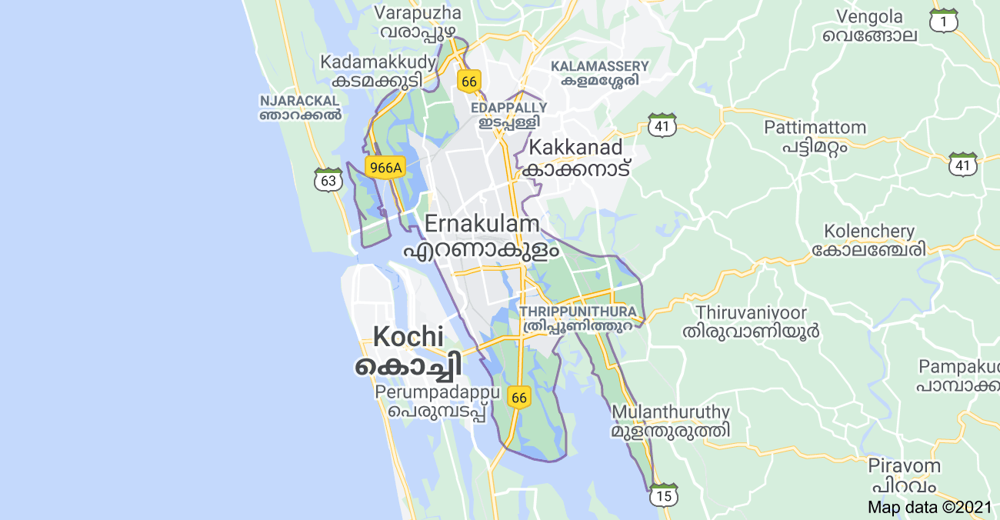

About Ernakulam:-
Ernakulam is one of the most developed districts in Kerala. It was formed by the two princely states of Travancore and Cochin and the British Malabar. Being commercial hub of Kerala, all the major developments in any sector, it all happens here. Ernakulam is blessed with a wonderful culture and grandeur. It is the fact that Ernakulam is the first district in the whole country to have 100% literacy is a direct indicator of the enviable educational standards of its inhabitants. On the west side of Ernakulam there is Arabian Sea.
Marine Drive
Marine Drive is among the most beautiful and popular destinations in Kochi. It is frequented by locals and visitors alike due to the magnificent view of the backwaters and Kochi Harbour available here. The walkway is perfect to enjoy a relaxing stroll at any time of the day. Around the location, numerous restaurants and malls have come up which make it the de facto stop for shoppers as well. There are several boat jetties along the way and the International Boat Jetty Complex is situated here as well. At night, the great Rainbow Bridge comes to life with vibrant lights and viewing it at this time is highly recommended. The entire area is a unique specimen of manmade wonders interspersed with natural gifts right in the midst of a sprawling metropolis.

Mattancherry Palace
The Mattancherry Palace, also known as Dutch Palace, is one of the finest examples of the Kerala style of architecture interspersed with colonial influences. Located at around 12 km from Ernakulam, it was built around 1545 C.E. by the Portuguese as a present to King Veera Kerala Verma of Kochi dynasty. It came to be known as the Dutch Palace as it underwent major repairs at the hands of the Dutch. It is famous for its long and spacious halls along with its central courtyard. It is also the home of the deity of the royal family, Pazhayannur Bhagavathy (the Deity of Pazhayannur). This double storied palace has a lovely collection of murals. These depict some of the great Indian epics like Ramayana and Mahabharata along with revered Gods of the Hindu faith like Lord Krishna of Guruvayur Temple. The great works of Sanskrit poet Kalidasa have also been depicted. The mural paintings cover an area of almost 300 sq. km. One gets an idea of the lives of the royal family with some of the other exhibits. These include the life-size portraits of the Kings of Cochin since 1864, sheathed swords, daggers and axes besides ceremonial spears decorated with feathers. Royal caps, coins issued by the Kings of Cochin along with plans laid out for Cochin by the Dutch can also be viewed here.